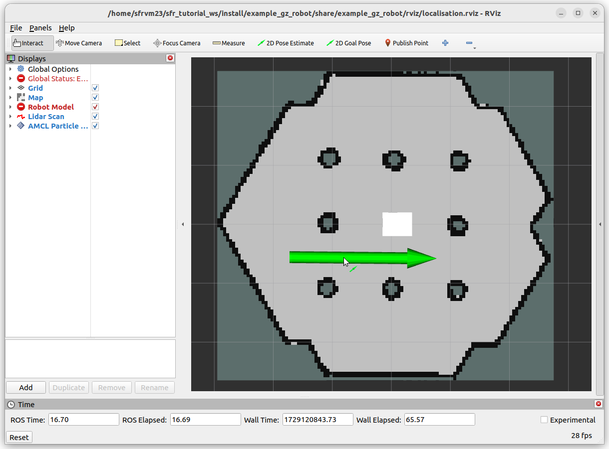
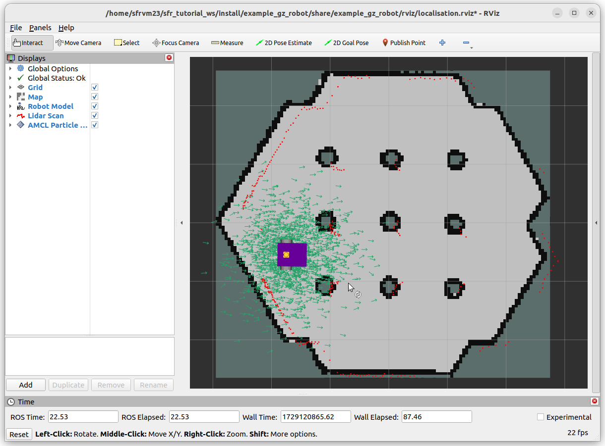

Localisation in a Map
Picture this, you are walking/driving around and trying to figure out where you are. You might look at road names, landmarks, signs to other points of interest. This process of figuring out where you are is called localisation.
Imagine our robot is in a known environment, with an existing map, it must localise itself in the map to be able to navigate. For this exercise, a robot will be spawned into the Turtlebot3 simulation environment, and localised against the existing map provided by the map server.
Inspecting the Launch File
Once again, before launching any nodes, the launch file will be inspected to understand how it works.
9def generate_launch_description():
10 ld = LaunchDescription()
11
12 # Specify the name of the package and path to xacro file in external package
13 pkg_name = 'example_gz_robot'
14
15 # Start simulation
16 launch_sim_world = IncludeLaunchDescription(
17 PythonLaunchDescriptionSource([os.path.join(
18 get_package_share_directory(pkg_name), 'launch'),
19 '/simulation_bringup.launch.py'])
20 )
A launch file called simulation_bringup.launch.py has been provided for this exercise. This launch file is included in this portion.
22 # map server node
23 map_subpath = 'maps/turtlebot3_world.yaml'
24 map_yaml_filepath = os.path.join(get_package_share_directory(pkg_name), map_subpath)
25
26 # Publishes a 2D occupancy grid based on a .pgm (and accompanying .yaml) file
27 node_map_server = Node(
28 package='nav2_map_server',
29 executable='map_server',
30 name='example_map_server',
31 output='screen',
32 parameters=[{'yaml_filename': map_yaml_filepath}] # add other parameters here if required
33 )
This should look familiar from the last exercise. It simply publishes the map as a ros topic based on the .pgm and .yaml file.
35 # https://docs.nav2.org/configuration/packages/configuring-amcl.html
36 # AMCL (Adaptive Monte Carlo Localisation)
37 node_amcl = Node(
38 package='nav2_amcl',
39 executable='amcl',
40 name='amcl'
41 )
To actually provide the localisation, this exercise uses AMCL (Adaptive Monte Carlo Localisation). It uses scan matching to estimate the robot position based on the map and lidar scan data, however, the actual algorithm is an extension of the particle filter.
The lifecycle manager once again makes life easier for us, ensuring that AMCL will not start without the map being published.
54 # Rviz node
55 rviz_config_file = os.path.join(get_package_share_directory(pkg_name), 'rviz', 'localisation.rviz')
56 node_rviz = Node(
57 package='rviz2',
58 namespace='',
59 executable='rviz2',
60 name='rviz2',
61 arguments=['-d', [rviz_config_file]]
62 )
63
64
65 # Add actions to LaunchDescription
66 # Simulation
67 ld.add_action(SetParameter(name='use_sim_time', value=True))
68 ld.add_action(launch_sim_world)
69 # Localisation
70 ld.add_action(node_lifecycle_manager)
71 ld.add_action(node_map_server)
72 ld.add_action(node_amcl)
73 # Visualisation
74 ld.add_action(node_rviz)
75 return ld
Finally, we use RViz to see the map, the robot, and sensor data.
For Lifecycle manager to work correcty we need to install Nav2, using the command:
sudo apt install ros-<ros2-distro>-navigation2
Using Localisation
Run the launch file with,
source ~/<YOUR_ROS_WS>/install/setup.bash
ros2 launch example_gz_robot localisation.launch.py
Once everything has loaded, you will immediately notice in RViz (and the terminal) that the robot has not been localised in the map at all! This is because AMCL needs an initial guess, published on the /initialpose topic, consisting of a geometry_msgs/msg/PoseWithCovarianceStamped.
It is diffcult to figure out the coordinates and orientation of the robot in the terminal. RViz offers a helpful 2D Pose Estimate button, this allows us to put a large green arrow down approximately where the robot is, and set the orientation. This can be performed multiple times and AMCL will take a new guess each time, just in case the estimates are poor.
|  |  |
{kind=link}
{kind=link}
The image to the right shows the estimate of the robot’s pose given by AMCL, along with the lidar scan in red. The cluster of green arrows are a visualisation of the particle filter at work. For the initial guess, the spread of candidate points is large, but as the robot moves around, the localisation estimate will generally improve.
Improve the Localisation Estimate
This portion will have you drive the robot around and observe the improvement (or possible degradation) of the estimated robot pose. In a terminal window, use the command
ros2 run teleop_twist_keyboard teleop_twist_keyboard
Danger
Pay attention to the lidar scan, and use that to avoid any obstacles. The estimate of the robot pose in the map may be poor, so you can not rely on it. The lidar scan will be relative to the robot, so should always be a good indicator of an imminent collision.
Drive the robot around, and the cluster of green arrows should become more tightly packed together. This is a visual representation of the confidence in the estimate increasing. However, you may still notice the odd arrow in certain places, particularly around the central pillars where it might be difficult to distinguish between different pillars. A clear indication of better localisation comes from the lidar scan, which should overlay very well with the map.
Once you are happy you have witnessed the power of particle filters for localisation, stop all processes with Ctrl+C, close all terminals, and move on to the next section.